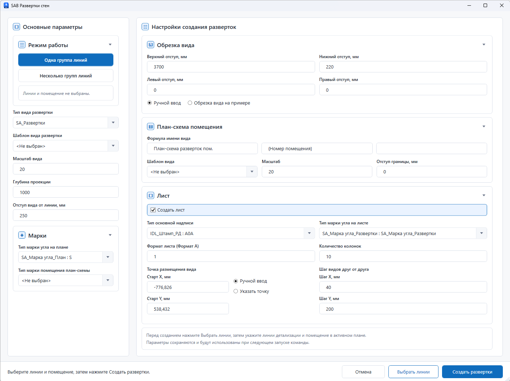
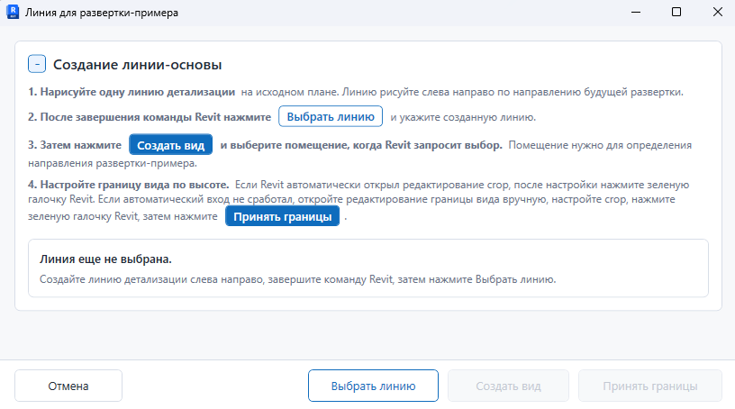
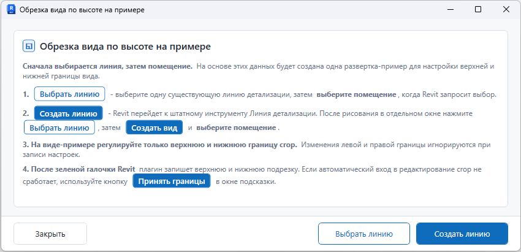

Что подготовить
- Активный план, на котором видны помещения.
- Линии детализации для направлений разверток.
- Тип вида развертки и шаблон вида.
- Основную надпись и тип марки угла, если создаются листы.
Развертки
Команда создает развертки помещений по выбранным линиям, настраивает обрезку вида и при необходимости размещает виды на листах.
Сценарий 01
Используйте команду после подготовки линий детализации на плане помещения. Линия задает направление будущей развертки, а выбранное помещение помогает плагину назвать вид и определить границы.
Сценарий 02
Окно
В окне задаются параметры будущих разверток, листов и марок. Сначала выберите линии, затем проверьте настройки и нажмите Создать развертки.

Настройка
Этот режим помогает подобрать верхнюю и нижнюю границу развертки по тестовому виду. Используйте его, если точные значения отступов пока неизвестны.

